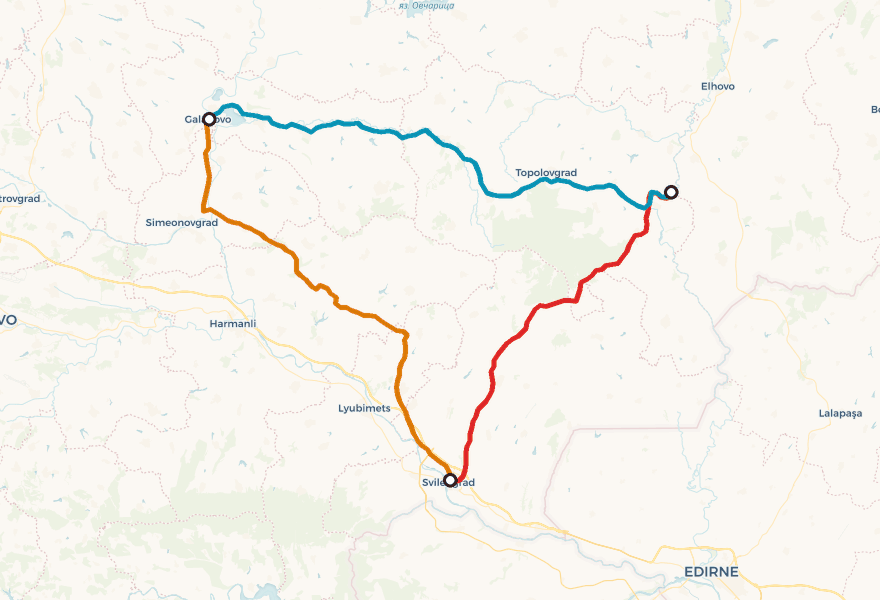

A point-to-point gravel loop in southeastern Bulgaria, starting and finishing at Galabovo. Friday 22 May is the drive-out day; the riding is Saturday–Monday.

Day 1 leaves the cooling towers of the Maritsa-Iztok lignite complex, crosses the western Sakar foothills' oak savanna and depopulated villages, and ends at the Maritsa over a 16th-century stone bridge in Svilengrad. Day 2 climbs north-east into the heart of the Sakar — a granite massif whose own stone the Thracians quarried into hundreds of dolmens, whose lone oaks shelter most of Bulgaria's Eastern Imperial Eagles, and whose ridge pastures hold wild peony and bee orchid in late May. Day 3 is the long transect west: through the regional centre of Topolovgrad, over the Sakar spine at Sakartsi (population 11), past the largest Thracian dolmen in Bulgaria, and back into the lignite landscape that opened the trip.
The depopulation atlas is part of the story. Sakartsi: 11 residents. Vladimirovo: 33. Kolarovo: about 6. Bulgaria has 199 settlements with zero residents (end-2024) and 566 villages with fewer than ten. The Sakar — border-zone plus mountain — is one of the country's emptiest belts. You'll ride through villages where the loudest sounds are storks and turtle doves.
Day 2 falls on Bulgaria's national Day of Bulgarian Education and Slavonic Literature. Expect parades in Svilengrad and Topolovgrad town squares on Sunday morning and possible road closures in centres until late morning. Many small municipal museums are closed on the holiday itself and unpredictable the day after.
Concrete action for Leg 3 (Monday 25 May): phone the Topolovgrad History Museum on +359 470 531 29 before relying on a visit, and the Hotel-Restaurant Imperial for Monday lunch.
Out of a coal landscape, through a granite-and-oak landscape, into a Mediterranean-edge border town with a Mimar Sinan bridge.
The hard day. The day Sakar earns its mythology — oak savanna, lone-oak Imperial Eagles, wild peonies, bee orchids, dolmens on the granite spine.
The long transect: Tundzha basin, Topolovgrad, the depopulated upland, the largest Thracian dolmen in Bulgaria, and the lignite landscape on the close.